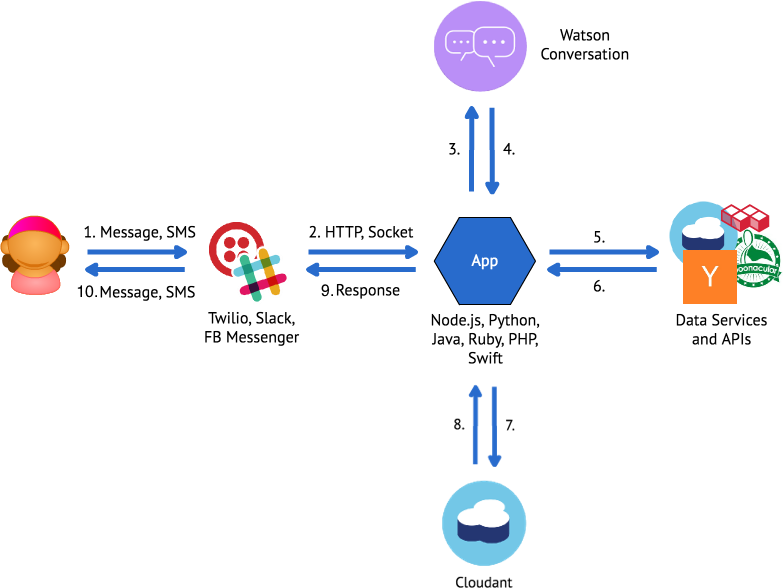
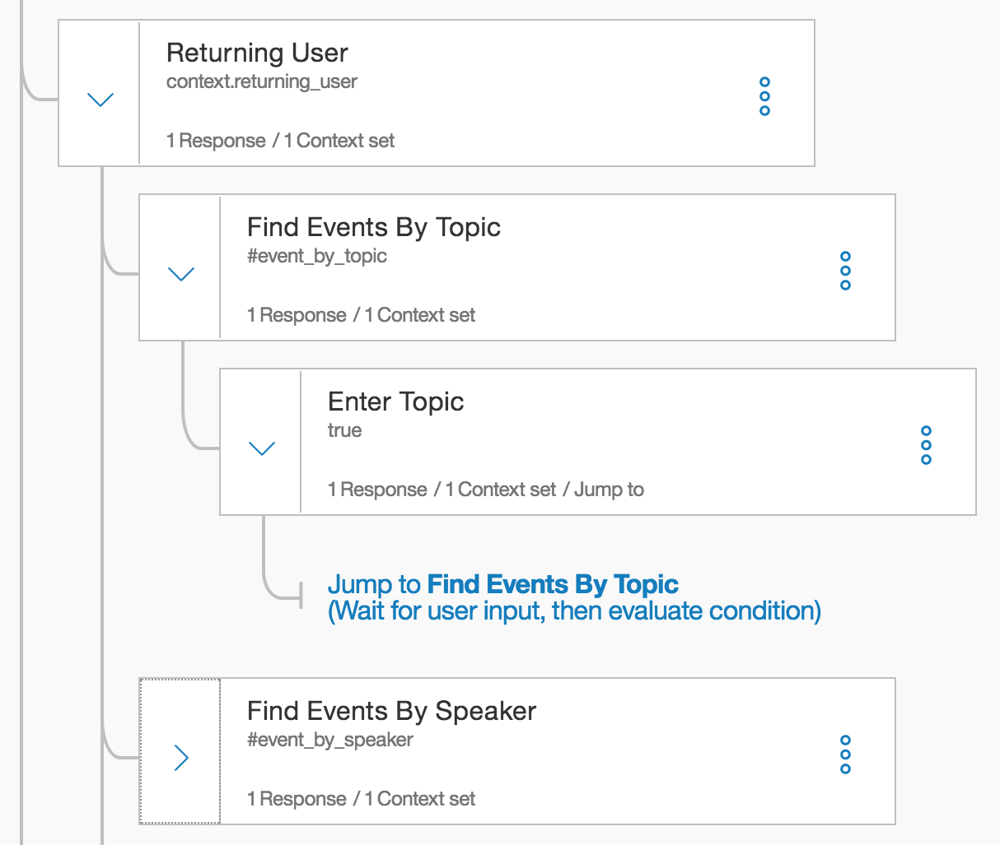
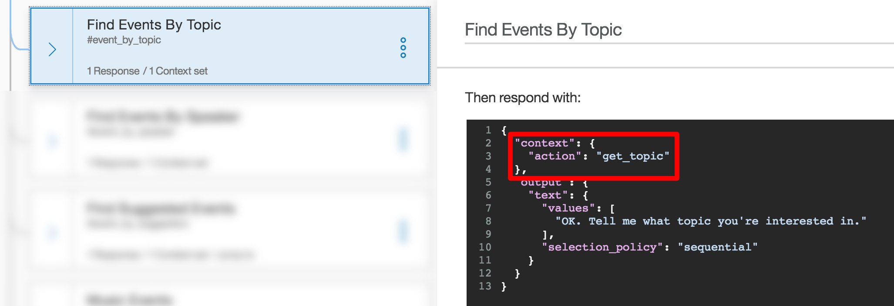
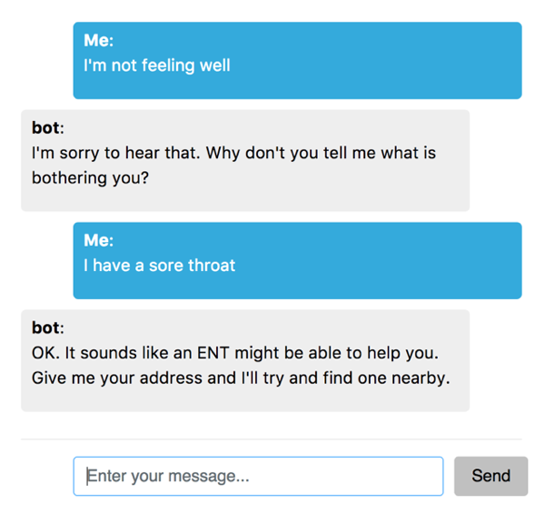
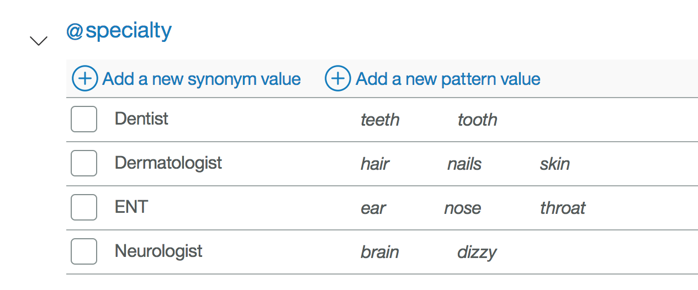

@markwatsonatx
Continuous improvement of chatbots using machine learning and predictive analytics
github.com/markwatsonatx/presentation-cognitive-cloud-summitContinuous improvement of chatbots using machine learning and predictive analytics
github.com/markwatsonatx/presentation-cognitive-cloud-summitBasic Bot Architecture

Add Data Services & APIs

Add NLP/Conversation

Store ALL Conversations!
Watson Conversation Concepts
Intents
Entities
Dialog
Context
Dialogs
Context
Passed between Watson Conversation and application
Keeps track of current dialog in the conversation
SXSW Event Finder
Find upcoming Interactive, Music, & Film events at SXSW
Display results on a map
Web app with mobile support
SMS support via Twilio
Demo
Stats
~350 Installs
~2,500 Conversations
* Every conversation stored in Cloudant
Sample Conversation
[
{
"action": "hello",
"date": 1489248407944,
"message": "Whats going on now?"
},
{
"action": "search_free_form",
"date": 1489248430678,
"message": "Cool places to have a lunch"
},
{
"action": "search_free_form",
"date": 1489248440882,
"message": "Close to downtown"
}
]
Lessons Learned
Be clear about what your bot can and cannot do
Track all conversations to monitor and improve your user experience
Treat your bot like you'd treat your UX
Cognitive Builder Faire
Demo
Watson Conversation Entities
Sample Conversation
[
{
"action": "sickGetSymptoms",
"date": 1510153929338,
"message": "i don't feel well",
"reply": "I'm sorry to hear that. Why don't you tell me
what is bothering you?\n"
},
{
"action": "sickUnknownSymptoms",
"date": 1510153936296,
"message": "i have a thoothache",
"reply": "Sorry, I'm not familiar with those symptoms.
Would you like me to help you find a doctor?\n"
},
]
Notebook
Take-aways
More Info
@InterConnect
Ask Me Anything
Wed. 2:30-5:00
DevZone
bluemix.com
medium.com/ibm-watson-data-lab
github.com/markwatsonatx/presentation-bots